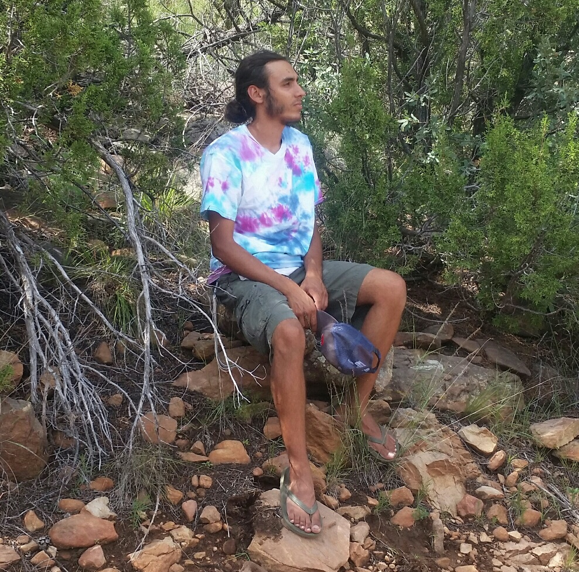

While it was founded in 2016, the concepts and ideas for Exodus
Survival LLC were conceived over a decade before. What started out
as a boyhood interest in knives, fire, and camping quickly developed
into an obsession with anything wilderness related. After tens of
thousands of hours of advanced compass navigation, EMT training,
ham radio certification, avalanche training the dream was realized
when Emilio founded Exodus Survival LLC.
While society at large is moving toward more technology and a “bigger
and faster is better” mentality, our goal is to equip the next generation
to thrive in the wilderness. That is why we offer courses for
3rd graders on up. From the beginning, Exodus Survival LLC has had
a strong desire to fully incorporate children into our courses. We
believe that a respect for the wilderness is necessary for all ages and
that everyone can benefit from a time to unplug and reconnect with
the outdoors.
Staff:
At Exodus Survival LLC we strive to provide the highest quality outdoor education available. This is only possible with the highest quality staff.

Emilio is currently the director and lead instructor for Exodus Survival LLC.
Emilio Shah, born in Seattle, Washington, but raised and educated in
the US, Israel and Spain both at home and in public schools, had an
unconventional upbringing. Emilio has experience working in a whole
range of different climates, from the damp and temperate forests of
western Washington to the harsh and dry high desert of northern New
Mexico. “Growing up I was always a little taken aback when someone
didn’t know how to make some quick strong cordage from the dead
nettles in the ditch or identify huckleberries growing out of an old
cedar stump”. It was the realization that “survival knowledge” isn’t
necessarily common knowledge that convinced him from a young age
that he needed to teach in a wilderness setting. With a diverse work
history that includes specialty home remodeling, tree service work, a
children’s summer camp teacher, and an EMT, Emilio has gleaned the
very valuable skills of problem solving and “uncommon sense.”
Exodus Survival has been a culmination and a combination of Emilio’s
two passions: the outdoors and teaching. When he is not working,
Emilio enjoys rock climbing, hiking, camping and wrestling with his
heeler pup. Emilio is currently both an active member of Atalaya
Search and Rescue and a volunteer firefighter.
Overnight courses will be held fully on the property. If you are taking a day course and prefer a shorter commute, then the closest accommodation is camping at Villanueva State Park.
Our “Wilderness Program’s” will be held at various locations in and
around Santa Fe.